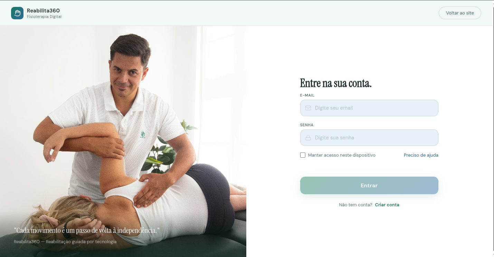

Reabilita360
Visão Computacional & IA

Problema
Como utilizar visão computacional para auxiliar a execução de exercícios de fisioterapia?
Solução
Sistema capaz de utilizar uma câmera para analisar movimentos corporais e identificar padrões de execução dos exercícios, transformando os movimentos capturados em dados que podem ser analisados pelo sistema.
A aplicação detecta e acompanha pontos do corpo durante a execução dos movimentos, permitindo avaliar posicionamento, trajétoria e execução do exercício.
Tecnologias
Python | Visão Computacional | Inteligencia Artificial | Processamento de Imagens
Resultado
Protótipo funcional para análise de movimentos por demio de câmera, servindo como aplicação prática dos conceitos de visão computacional e inteligência artificial.
![[a preencher: mapa temático do projeto]](images/PLACEHOLDER-mapa.png)
![[a preencher: foto do dispositivo ou dashboard]](images/PLACEHOLDER-pluviometro.png)